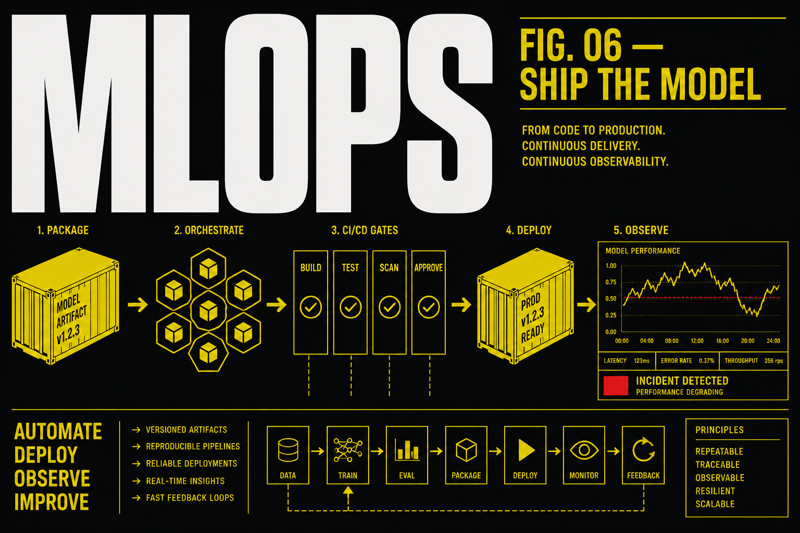

MLOps
Six months live for people who can already train a model and now need to ship it: data and model versioning, containers, CI/CD gates, Kubernetes serving, monitoring, and drift response. Observability is Prometheus/Grafana-style — not Power BI.

Program fee
One-time payment
MLOps course fees are ₹60,000 for live instructor-led training with capstone and certificate.
Payment options
- One-time payment for 6-month live instructor-led program.
What you learn
Who it is for
Career support
Course Curriculum
Module 1: Containers
Packaging ML
If it is not in an image, it is not a release. You will containerize training and serving so ‘works on my laptop’ stops being a strategy.
Docker and containerization
- Multi-stage builds, non-root users, .dockerignore
- GPU images vs CPU images — do not mix them by accident
- Pin base tags; floating latest is an incident
Reproducible images
- Lock files, hashes, and why pip freeze on Monday lies on Friday
- Secrets via env/runtime, not baked layers
- SBOM-lite: know what you shipped
Local-to-cloud parity
- Same entrypoint locally and in CI
- Compose for model + feature store mock
- A smoke test that runs in the image
Not this module
- Not Power BI
- Not beginner Python
- Not a placement %
You leave with a Dockerfile that trains or serves, plus a one-command smoke test.
Module 2: Versioning
Packaging ML
Models without data versions are folklore. You will version data and models so a rollback is a checkout, not a memory.
Data and model versioning
- DVC or equivalent: remotes, pipelines, metrics files
- What belongs in git vs the data remote
- A failed experiment you can re-run
DVC habits
- dvc.yaml stages with frozen params
- Metrics that CI can read
- Avoid packing 4GB into a commit
MLflow registry
- Runs, params, artifacts
- Stage: Staging vs Production as a process, not a sticker
- Load a registered model in serving code by name+version
Audit trail
- Who promoted this?
- What data snapshot?
- A markdown model card with known slices
You leave with a versioned dataset, a registered model, and a card that names the snapshot.
Module 3: CI/CD for ML
Release discipline
Training is a build. You will gate on metrics, fail the pipeline, and refuse to ‘just ship the pickle’.
Training pipelines
- Scheduled vs on-merge training
- Feature generation as a stage
- Determinism: seeds and data cuts
Eval gates
- Minimum metric vs last production
- Slice metrics so you cannot hide a subgroup fail
- Block merge if the gate fails
Rollback patterns
- Keep N previous model versions warm
- Traffic: shadow, canary, then full
- A runbook: how to revert in 15 minutes
CI reality
- Minutes of GPU vs your bill
- Caching datasets in CI without leaking PII
- Notifications that a human will read
You leave with a CI job that trains or evaluates and fails closed on a bad metric.
Module 4: Kubernetes for ML services
Release discipline
Serving is a workload. You will put a model behind an API on Kubernetes with the boring pieces: probes, resources, and more than one replica.
Serving
- FastAPI/TorchServe-class wrappers
- Readiness vs liveness for slow loaders
- Batch vs online — two different services sometimes
Autoscaling
- CPU/GPU requests and limits
- HPA on QPS or GPU util — know the lag
- Cold start is a product bug
Environments
- Dev/stage/prod as namespaces or clusters
- ConfigMaps/Secrets
- Network policies at a conceptual level
Optional clouds
- The same pattern on SageMaker / Azure ML / Vertex after you can do it yourself
- Managed ≠ no runbook
You leave with a k8s manifest (or equivalent) that serves, probes, and scales on a toy load.
Module 5: Monitoring
Operate
Ops dashboards here are Prometheus/Grafana-style. Power BI is not on this syllabus. You will watch data drift, latency, and the metric that pays the bills.
Model monitoring
- Input distributions vs training snapshot
- Prediction drift vs concept drift — name which one you saw
- Alerting that is not 400 noisy Slack messages
Drift detection
- A simple PSI/KS-style check you can explain
- Retrain trigger vs investigate trigger
- When the world changed and the model should not
Evaluation pipelines
- Offline eval on a fresh window
- Shadow mode vs production labels (delayed)
- Incident: accuracy drop, you have 30 minutes — what do you open first?
Handoff to LLMOps
- Tabular/classical serving vs token traces
- If your job is LLM APIs, take LLMOps next
You leave with a Grafana-style board (or a sober substitute) plus a drift alert you tested by breaking the data.
Frequently asked questions
Is the fee ₹80,000?
No. The published fee is ₹60,000 one-time. Duration on this catalog is 6 months.
Do you teach Power BI?
No. Ops dashboards here are Prometheus/Grafana-style. Power BI is only on Data Analytics with AI.
How is this different from LLMOps?
MLOps is training pipelines, registries, and serving classical/ML models. LLMOps is inference, eval gates, traces, and token cost.
Ready to start?
Talk to Prerna about this program — 15 minutes, no sales pitch.